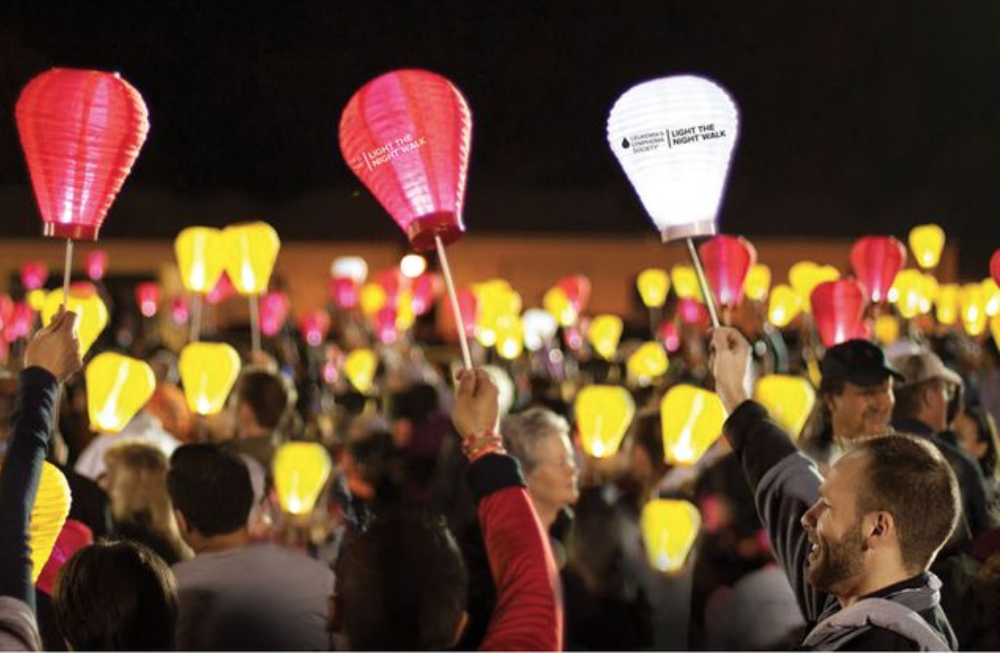

K
S
KATE
STRONG
EVENTS
Advokate
Advokate is an event kate's family puts on every year. It is an event to celebrate kate's life and raise money for AML. There is live music, games, raffels, and more.
Light the Night
Light The Night is a series of fundraising campaigns benefiting The Leukemia & Lymphoma Society's (LLS) funding of research to find blood cancer cures. We bring hope instead of despair by working to ensure access to treatments for all blood cancer patients. We bring communities together to celebrate those who are fighting the disease and to honor those we have lost.
